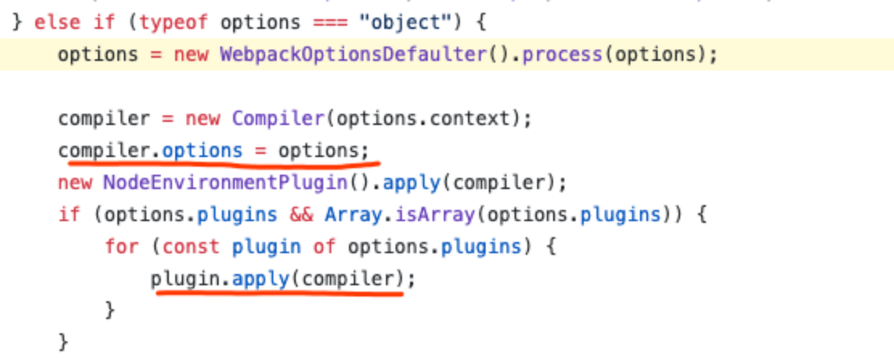
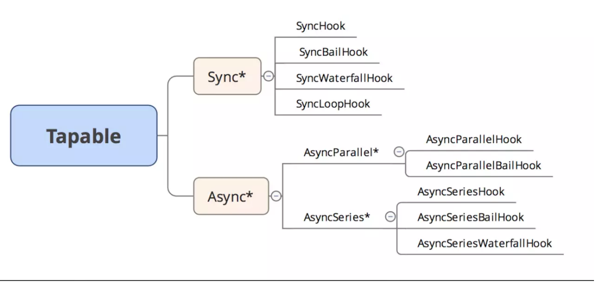
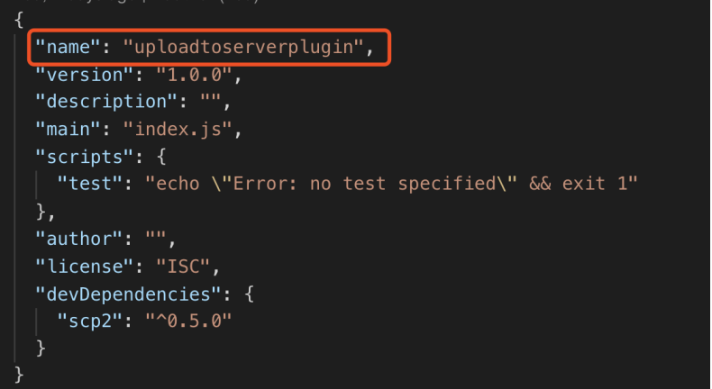
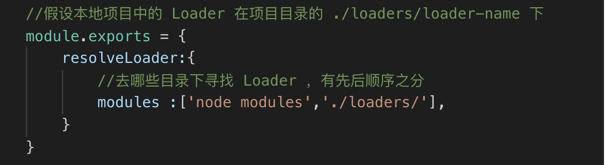
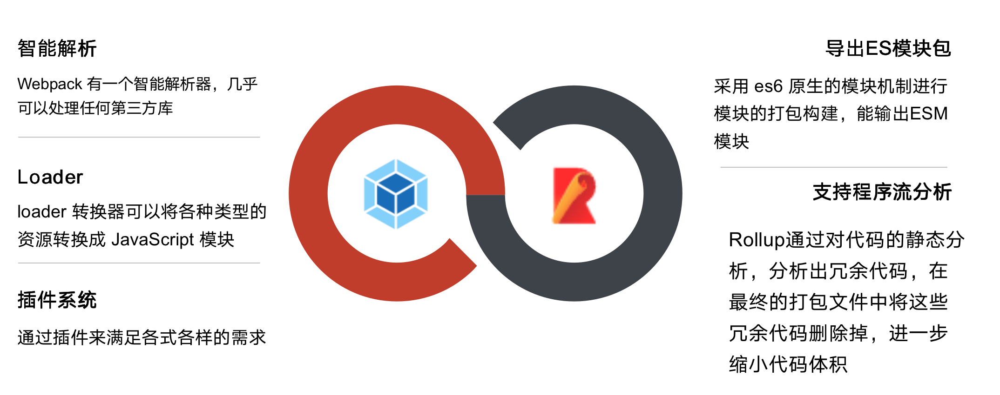

基本打包机制
本质上，webpack 是一个现代 JavaScript 应用程序的静态模块打包器(module bundler)。当 webpack 处理应用程序时，它会递归地构建一个依赖关系图(dependency graph)，其中包含应用程序需要的每个模块，然后将所有这些模块打包成一个或多个 bundle。
打包过程可以拆分为四步：
1、利用babel完成代码转换,并生成单个文件的依赖
2、从入口开始递归分析，并生成依赖图谱
3、将各个引用模块打包为一个立即执行函数
4、将最终的bundle文件写入bundle.js中
小解读：
1.1 利用@babel/parser解析代码，识别module
1.2 利用@babel/traverse遍历AST，获取通过import引入的模块并保存所依赖的模块
1.3 通过@babel/core和@babel/preset-env进行代码的转换，就是转化ES6/7/8代码等
1.4 输出单个文件的依赖
return{
filename,//该文件名
dependencies,//该文件所依赖的模块集合(键值对存储)
code//转换后的代码
}2.1 从入口开始，广度遍历所有依赖，并输出整个项目的依赖图谱
graphArray.forEach(item => {
graph[item.filename] = {
dependencies: item.dependencies,
code: item.code
}
})
return graph3.1 生成代码字符串
4.1 写入文件
完整代码见：https://github.com/LuckyWinty/blog/tree/master/code/bundleBuild
以上是打包的基本机制，而webpack的打包过程，会基于这些基本步骤进行扩展，主要有以下步骤：
1. 初始化参数 从配置文件和 Shell 语句中读取与合并参数，得出最终的参数
2. 开始编译 用上一步得到的参数初始Compiler对象，加载所有配置的插件，通 过执行对象的run方法开始执行编译
3. 确定入口 根据配置中的 Entry 找出所有入口文件
4. 编译模块 从入口文件出发，调用所有配置的 Loader 对模块进行编译，再找出该模块依赖的模块，再递归本步骤直到所有入口依赖的文件都经过了本步骤的处理
5. 完成模块编译 在经过第4步使用 Loader 翻译完所有模块后， 得到了每个模块被编译后的最终内容及它们之间的依赖关系
6. 输出资源：根据入口和模块之间的依赖关系，组装成一个个包含多个模块的 Chunk,再将每个 Chunk 转换成一个单独的文件加入输出列表中，这是可以修改输出内容的最后机会
7. 输出完成：在确定好输出内容后，根据配置确定输出的路径和文件名，将文件的内容写入文件系统中。
整个流程概括为3个阶段，初始化、编译、输出。而在每个阶段中又会发生很多事件，Webpack会将这些事件广播出来供Plugin使用。具体钩子，可以看官方文档：https://webpack.js.org/api/compiler-hooks/#hooks
Webpack Loader
Loader 就像一个翻译员，能将源文件经过转化后输出新的结果，并且一个文件还可以链式地经过多个翻译员翻译。
概念：
开发Loader形式
1.基本形式
module.exports = function (source ) {
return source;
}
2.调用第三方模块
const sass= require('node-sass');
module.exports = function (source) {
return sass(source);
}由于 Loader 运行在 Node.js 中，所以我们可以调用任意 Node.js 自带的 API ，或者安装第三方模块进行调用
3、调用Webpack的Api
//获取用户为 Loader 传入的 options
const loaderUtils =require ('loader-utils');
module.exports = (source) => {
const options= loaderUtils.getOptions(this);
return source;
}
//返回sourceMap
module.exports = (source)=> {
this.callback(null, source, sourceMaps);
//当我们使用 this.callback 返回内容时 ，该 Loader 必须返回 undefined,
//以让 Webpack 知道该 Loader 返回的结果在 this.callback 中，而不是 return中
return;
}
// 异步
module.exports = (source) => {
const callback = this.async()
someAsyncOperation(source, (err, result, sourceMaps, ast) => {
// 通过 callback 返回异步执行后的结果
callback(err, result, sourceMaps, ast)
})
}
//缓存加速
module.exports = (source) => {
//关闭该 Loader 的缓存功能
this.cacheable(false)
return source
}
source参数是compiler 传递给 Loader 的一个文件的原内容，这个函数需要返回处理后的内容，这里为了简单起见，直接将原内容返回了，相当于该Loader 有做任何转换.这里结合了webpack的api和第三方模块之后，可以说loader可以做的事情真的非常非常多了...
更多的webpack Api可以看官方文档：https://webpack.js.org/api/loaders
Webpack Plugin
专注处理 webpack 在编译过程中的某个特定的任务的功能模块，可以称为插件
概念：
开发基本形式
// 1、BasicPlugin.js 文件（独立模块）
// 2、模块对外暴露的 js 函数
class BasicPlugin{
//在构造函数中获取用户为该插件传入的配置
constructor(pluginOptions) {
this.options = pluginOptions;
}
//3、原型定义一个 apply 函数，并注入了 compiler 对象
apply(compiler) {
//4、挂载 webpack 事件钩子（这里挂载的是 emit 事件）
compiler.plugin('emit', function (compilation, callback) {
// ... 内部进行自定义的编译操作
// 5、操作 compilation 对象的内部数据
console.log(compilation);
// 6、执行 callback 回调
callback();
});
}
}
// 7、暴露 js 函数
module.exports = BasicPlugin;
Webpack 启动后，在读取配置的过程中会先执行 new BasicPlugin(options )初始化一个 BasicPlugin 并获得其实例。在初始化 Compiler 对象后，再调用 basicPlugin.apply (compiler ）为插件实例传入 compiler 对象。插件实例在获取到 compiler 对象后，就可以通过 compiler. plugin （事件名称 ，回调函数）监听到 Webpack 广播的事件，并且可以通过 compiler 对象去操作 Webpack。
Compiler对象
compiler 对象是 webpack 的编译器对象，compiler 对象会在启动 webpack 的时候被一次性地初始化，compiler 对象中包含了所有 webpack 可自定义操作的配置，例如 loader 的配置，plugin 的配置，entry 的配置等各种原始 webpack 配置等

webpack部分源码：https://github.com/webpack/webpack/blob/10282ea20648b465caec6448849f24fc34e1ba3e/lib/webpack.js#L30
Compilation 对象
compilation 实例继承于 compiler，compilation 对象代表了一次单一的版本 webpack 构建和生成编译资源的过程。当运行 webpack 开发环境中间件时，每当检测到一个文件变化，一次新的编译将被创建，从而生成一组新的编译资源以及新的 compilation 对象。一个 compilation 对象包含了 当前的模块资源、编译生成资源、变化的文件、以及 被跟踪依赖的状态信息。编译对象也提供了很多关键点回调供插件做自定义处理时选择使用。
Compiler 和 Compilation 的区别在于： Compiler 代表了整个 Webpack 从启动到关闭的生命周期，而 Compilation 只代表一次新的编译。
Tapable & Tapable 实例
webpack 的插件架构主要基于 Tapable 实现的，Tapable 是 webpack 项目组的一个内部库，主要是抽象了一套插件机制。它类似于 NodeJS 的 EventEmitter 类，专注于自定义事件的触发和操作。 除此之外, Tapable 允许你通过回调函数的参数访问事件的生产者。

webpack本质上是一种事件流的机制，它的工作流程就是将各个插件串联起来，而实现这一切的核心就是Tapable，webpack中最核心的负责编译的Compiler和负责创建bundles的Compilation都是Tapable的实例，Tapable 能够让我们为 javaScript 模块添加并应用插件。 它可以被其它模块继承或混合。
一些钩子的含义：
同步钩子，用tap方式注册。异步钩子，有三种注册/发布的模式，tap、tapAsync、tapPromise。
Tapable 简化后的模型，就是我们熟悉的发布订阅者模式
class SyncHook{
constructor(){
this.hooks = {}
}
tap(name,fn){
if(!this.hooks[name])this.hooks[name] = []
this.hooks[name].push(fn)
}
call(name){
this.hooks[name].forEach(hook=>hook(...arguments))
}
}Loader & Plugin 开发调试
npm link
1. 确保正在开发的本地 Loader 模块的 package.json 已经配置好(最主要的main字段的入口文件指向要正确)
2. 在本地的 Npm 模块根目录下执行 npm link，将本地模块注册到全局
3. 在项目根目录下执行 npm link loader-name ，将第 2 步注册到全局的本地 Npm 模块链接到项目的 node moduels 下，其中的 loader-name 是指在第 1 步的package.json 文件中配置的模块名称

Npm link 专门用于开发和调试本地的 Npm 模块，能做到在不发布模块的情况下， 将本地的一个正在开发的模块的源码链接到项目的 node_modules 目录下，让项目可以直接使 用本地的 Npm 模块。由于是通过软链接的方式实现的，编辑了本地的 Npm 模块的代码，所以在项目中也能使用到编辑后的代码。
Resolveloader
ResolveLoader 用于配置 Webpack 如何寻找 Loader ，它在默认情况下只会去 node_modules 目录下寻找。为了让 Webpack 加载放在本地项目中的 Loader,需要修改 resolveLoader.modules。

构建工具选择
针对不同的场景，选择最合适的工具

通过对比，不难看出，Webpack和Rollup在不同场景下，都能发挥自身优势作用。webpack作为打包工具，但是在定义模块输出的时候，webpack确不支持ESM，webpack插件系统庞大，确实有支持模块级的Tree-Shacking的插件，如webpack-deep-scope-analysis-plugin。但是粒度更细化的，一个模块里面的某个方法，本来如果没有被引用的话也可以去掉的，就不行了....这个时候，就要上rollup了。rollup它支持程序流分析，能更加正确的判断项目本身的代码是否有副作用，其实就是rollup的tree-shaking更干净。所以我们的结论是rollup 比较适合打包 js 的 sdk 或者封装的框架等，例如，vue 源码就是 rollup 打包的。而 webpack 比较适合打包一些应用，例如 SPA 或者同构项目等等。
结论:在开发应用时使用 Webpack，开发库时使用 Rollup
资料推荐
补充学习资料：https://github.com/LuckyWinty/blog/issues/1
更多学习资料推荐：
Loader: https://juejin.im/post/5a698a316fb9a01c9f5b9ca0
Tapable: https://juejin.im/post/5abf33f16fb9a028e46ec352
webpack：
更多：
想来深圳Shopee(外企,不加班,福利好,假期多)发展的。欢迎找我内推,前端、后台、测试、产品等各种岗～^_^
其他：如果方便的话，可以关注一下我的github,并给我刚开始的博客项目点个start～ ^_^